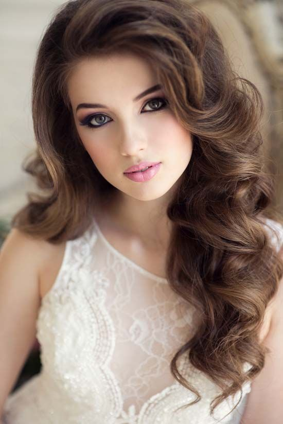

Marriege
Свадьба – это особое событие. В этот день любой девушке хочется выглядеть эффектно и привлекательно.
Свадебный макияж, как и вечерний, может быть чуть ярче и выразительнее обычного. Но в то же время он должен вам подходить.
Для такого торжественного события, как правило, используют светлые тона, перламутровые оттенки и светлые блески.
Именно они лучше всего будут сочетаться с пышным белым платьем.

Но все же не стоит слепо следовать правилам и выбирать стандартный макияж, который подходит всем без исключения.
Акцентируя внимание на своих достоинствах, можно получить идеальный макияж и стать действительно одной из самых красивых невест.
{% endblock %}